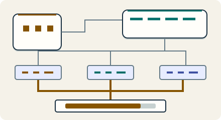

Go deeper · 7 minutes
Inside a storage engine
The path from a write to disk decides memory, I/O and cost.
Open this lesson
Fast inserts, then a sudden stall
An import runs well for ten minutes, then write latency climbs even though incoming traffic is flat. The database is merging files in the background. An acknowledged byte can be written several times over its life. Capacity planning that counts only the incoming payload misses that work.
Two ways to keep keys sorted
Write several keys, flush twice, then compact. Both structures receive the same writes. Compare counted record work with B+ tree page changes.
Worked example: the hidden writes
Write amplification depends on workload, compaction policy, cache and storage layout. These are explicit measured assumptions, not universal LSM ratios. Each device in this example can safely sustain 300 MB/s, so replication and repair have limited spare room. The traffic engine models store capacity but does not simulate SSTables or disk endurance.
Count physical writes
- 20 MB/s logical: The application measures incoming logical bytes.
- 10 times write amplification: WAL, flushes and compaction together require 200 MB/s, about 17.28 TB/day.
- 3 replicas: About 51.84 TB/day across devices. Each needs headroom for bursts and repair.
Reads pay too
Read keys that exist and one that does not. A Bloom negative skips a file; a positive still requires a lookup. Filters reduce read work, not the number of versions stored.
Key numbers
- Device writes
- ≈ 200 MB/s. 20 MB/s logical × measured amplification 10
- Daily device writes
- ≈ 17.28 TB. 200 MB/s × 86,400 s; decimal units
- Filter memory
- ≈ 125 MB. 100 million keys × 10 bits ÷ 8; excludes overhead
Check your reasoning
Think through these questions before opening the lesson. In the game you can test the idea and compare your reasoning.
- Logical writes are 20 MB/s and measured total device write amplification is 10. What device bandwidth is needed before headroom?
- The SSD vendor quotes 1 GB/s. Why will you not promise 1 GB/s of user writes? Follow-up: include replication.
- A file's Bloom filter says a key may be present. What does a correct point lookup do next?
- Can we stop compaction to make today's writes faster? Follow-up: what happens tomorrow?
- A new workload fits in RAM, but must survive crashes. Which evidence best supports choosing B-tree or LSM storage?
The key point
Size the physical reads, writes and memory under background work, not just the incoming payload.
Practise this idea
- Hard
Object storage service
Customers store billions of files, from tiny pictures to huge videos, and fetch them by name. The service must never lose a file, scale without a limit and stay cheap. Most files are written once and rarely read again.
- Hard
Bank ledger
You run the system of record for a regional bank: every deposit, withdrawal and card settlement is a posting that must be exact and permanent. Customers in two continents read balances all day, and regulators can ask for proof at any time. A bad day for you is a loss of even one posting.
- Hard
Health readings from a wearable
A wearable records health readings even when its phone or cloud service is unavailable. Keep raw readings on the device when possible and upload only consented summaries in sparse batches. The system must not lose locally saved readings during a supported outage, and deleting an account must have a verifiable end-to-end workflow.
- Medium
Fleet telemetry
A freight company has 150,000 trucks that each send a batch of sensor readings every 30 seconds. Dispatchers watch live maps and analysts run reports. You must take in every batch, keep a month of detail cheaply, and survive the moments when thousands of trucks come back online at once.